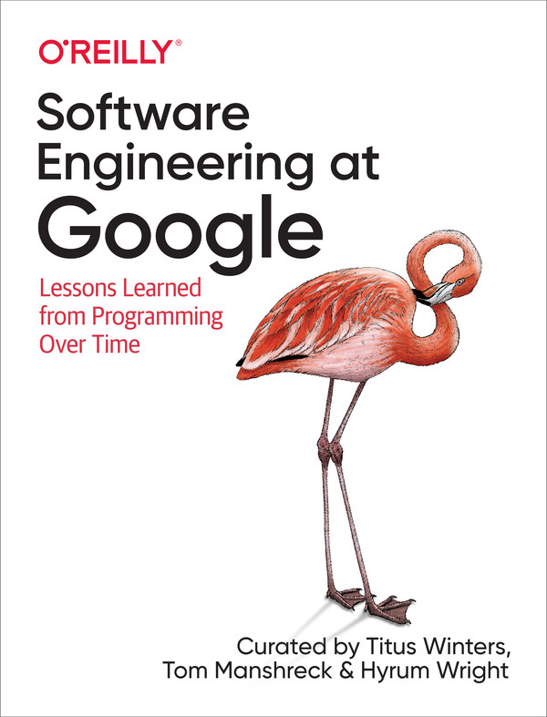

英文原版封面 · O’Reilly
BOOK 001 / 五个部分 · 25 章 · 后记
Software Engineering
at Google
从时间、团队规模和工程权衡出发，理解如何让代码在长期演进中持续有用。笔记围绕原书主要知识展开推理，并结合实际情境说明如何应用；适合需要维护系统、参与团队协作及改进研发流程的工程师阅读。
阅读目录
按原书五个部分编排Part I · Thesis总论
软件工程与编程有何不同：时间、规模与权衡。
Part II · Culture文化
人怎样一起把工作做好：协作、知识共享、公平、领导与生产力度量。
Part III · Processes流程
团队约定怎样落到日常：风格规则、代码评审、文档、测试与弃用。
Part IV · Tools工具
支撑规模的基础设施：版本控制、代码搜索、构建、评审与分析、依赖与大规模变更、集成交付和计算平台。